Introduction to R - Part 2
September 8, 2021
Objectives for this part
Load packages to add functions to R.
Produce graphics with the ggplot2 package.
- Create different types of graphics: point clouds, boxplots, histograms and more.
- Create composite graphics.
- Customize the appearance of graphical elements.
Manipulate data frames with the dplyr package.
- Filter and sort observations.
- Transform the variables.
- Calculate statistics by groups of observations.
- Join two tables according to common variables.
R packages
A package is a collection of functions developed by R users that increases the basic capabilities of the R language in a certain domain. The CRAN (https://cran.r-project.org/web/packages/) package repository currently has more than 12,000!
To install a package on your computer, use the
install.packagesfunction with the package name in quotation marks, e.g.install.packages ("ggplot2"). In RStudio, you can view the list of packages already installed under the Packages tab in the lower right quadrant.To load a package into your current R session and have access to its functions, use the
libraryfunction, e.g.library(ggplot2). Note that quotation marks are not required this time.
Data visualization with ggplot2
There are several ways to produce graphs in R. We will use in this course the ggplot2 package, which provides a consistent code structure for multiple types of graphs and offers a wide range of options to customize the appearance of the graphics.
library(ggplot2)Create a scatter plot
The msleep dataset included with ggplot2 contains data on sleep of 83 mammal species.
msleep## # A tibble: 83 x 11
## name genus vore order conservation sleep_total sleep_rem sleep_cycle awake
## <chr> <chr> <chr> <chr> <chr> <dbl> <dbl> <dbl> <dbl>
## 1 Cheet~ Acin~ carni Carn~ lc 12.1 NA NA 11.9
## 2 Owl m~ Aotus omni Prim~ <NA> 17 1.8 NA 7
## 3 Mount~ Aplo~ herbi Rode~ nt 14.4 2.4 NA 9.6
## 4 Great~ Blar~ omni Sori~ lc 14.9 2.3 0.133 9.1
## 5 Cow Bos herbi Arti~ domesticated 4 0.7 0.667 20
## 6 Three~ Brad~ herbi Pilo~ <NA> 14.4 2.2 0.767 9.6
## 7 North~ Call~ carni Carn~ vu 8.7 1.4 0.383 15.3
## 8 Vespe~ Calo~ <NA> Rode~ <NA> 7 NA NA 17
## 9 Dog Canis carni Carn~ domesticated 10.1 2.9 0.333 13.9
## 10 Roe d~ Capr~ herbi Arti~ lc 3 NA NA 21
## # ... with 73 more rows, and 2 more variables: brainwt <dbl>, bodywt <dbl>Enter the following code to produce a scatter plot showing the number of hours of the REM phase (sleep_rem) based on the total number of hours of sleep.
ggplot(data = msleep, mapping = aes(x = sleep_total, y = sleep_rem)) +
geom_point()## Warning: Removed 22 rows containing missing values (geom_point).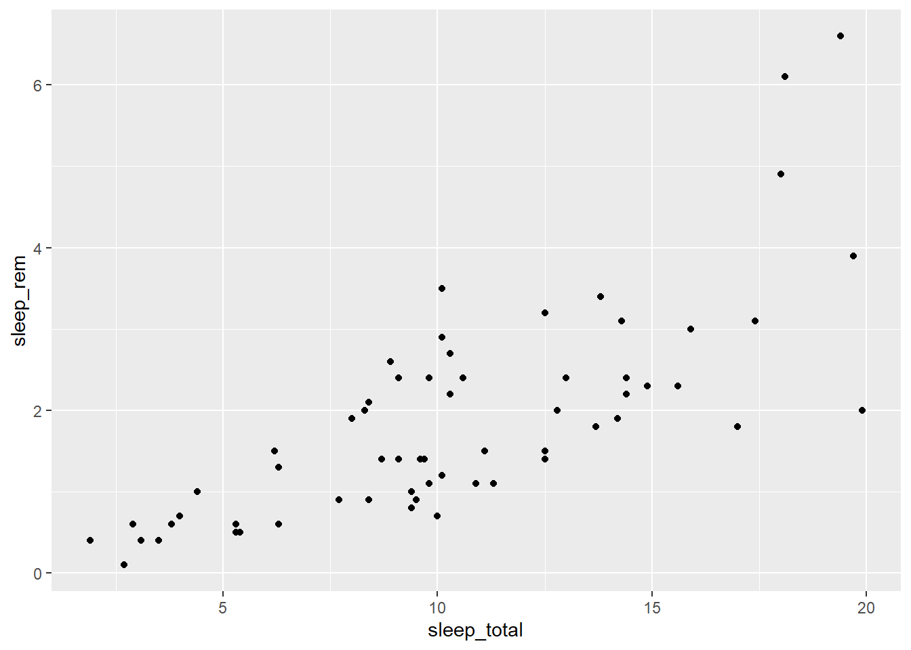
The graph appears in the Plots tab of the lower right quadrant in RStudio. You can export it in .PNG or .PDF format using the Export menu.
This first example illustrates the basic structure for producing a graph with ggplot2:
A call to the
ggplotfunction with two arguments:- a data frame (
data) and - a mapping specified with the
aesfunction. Within this function, we associate elements of the graph with variables in the dataset (eg sleep_total on the x axis).
- a data frame (
The
+symbol to indicate that we will add other components to the graph.A geom function to specify the geometric elements represented (here
geom_point, for a scatter plot).
Note: After naming the data frame in the
dataargument, theaesfunction only requires the variable names, without quotation marks and without specifying the data frame again (sleep_reminstead ofmsleep$sleep_rem). This is a special property of the ggplot2 package functions, which we will also find with the dplyr package below, as well as with the regression functions later in the lesson.
Exercise 1
First, load the Kejimkujik National Park Dataset that we used in the first lab:
kejim <- read.csv("cours1_kejimkujik.csv")
head(kejim)## site parcelle jour mois annee num_arbre nb_tiges espece dhp
## 1 BD A 31 8 2004 1 1 TSCA 16.3
## 2 BD A 31 8 2004 2 1 TSCA 24.0
## 3 BD A 31 8 2004 6 1 TSCA 29.8
## 4 BD A 31 8 2004 7 1 ACRU 29.0
## 5 BD A 31 8 2004 8 1 TSCA 15.5
## 6 BD A 31 8 2004 9 1 TSCA 32.0From this data frame, produce a scatter plot of the DBH (dhp, on the y axis) according to the species (espece, on the x axis).
Types of graphics: the geom functions
Here, there are too many trees to see the distribution of DBH by species with a scatter plot. To view the same data with boxplots, just replace geom_point withgeom_boxplot in our previous code.
ggplot(kejim, aes(x = espece, y = dhp)) +
geom_boxplot()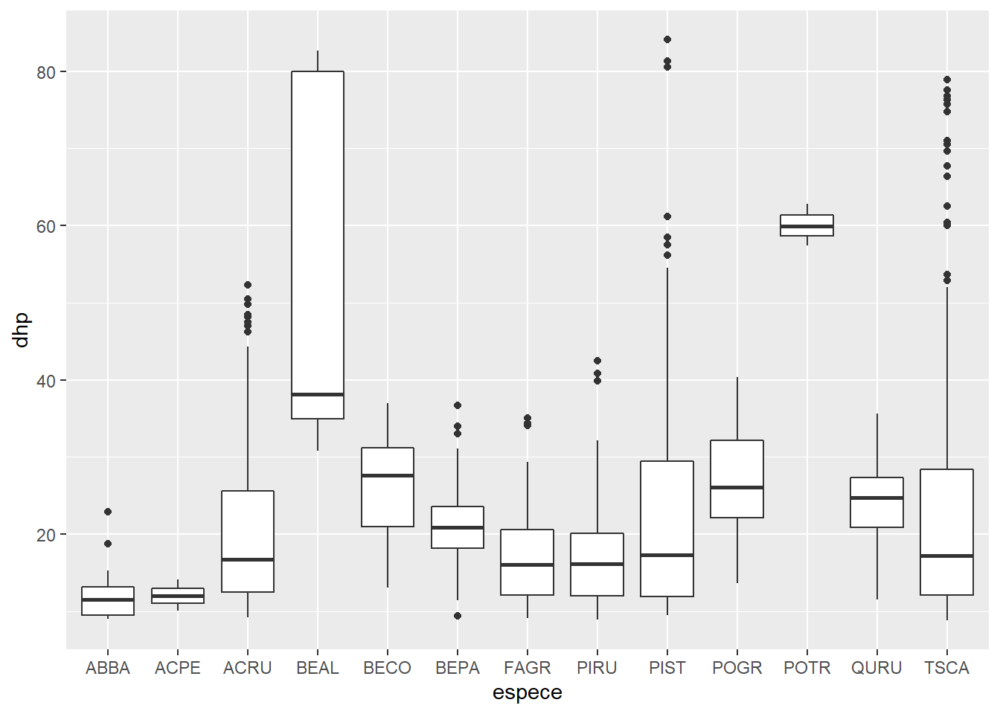
Multiple geom _... functions can be used to overlay elements on the same graph. So we add the dots to the boxplot, specifying a different color for geom_point.
ggplot(kejim, aes(x = espece, y = dhp)) +
geom_boxplot() +
geom_point(color = "red")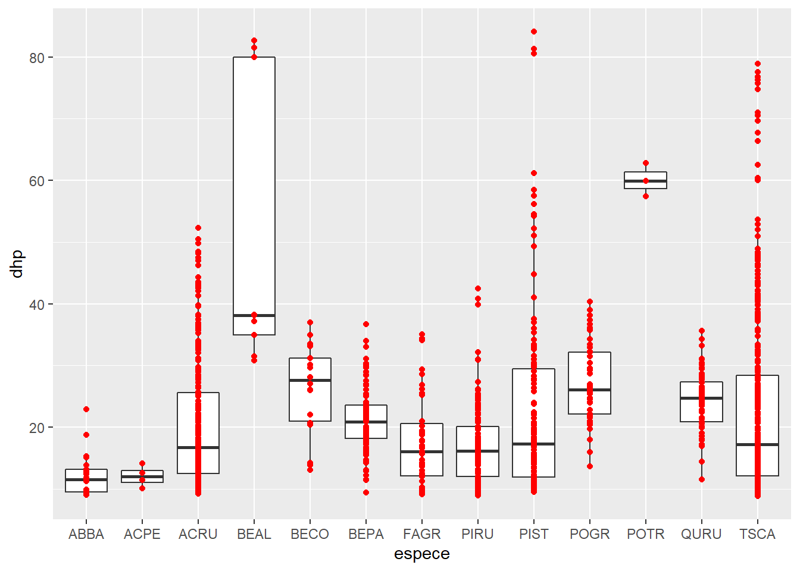
We can also represent summary statistics of a set of points, such as their mean.
ggplot(kejim, aes(x = espece, y = dhp)) +
geom_boxplot() +
geom_point(color = "red", stat = "summary", fun = "mean")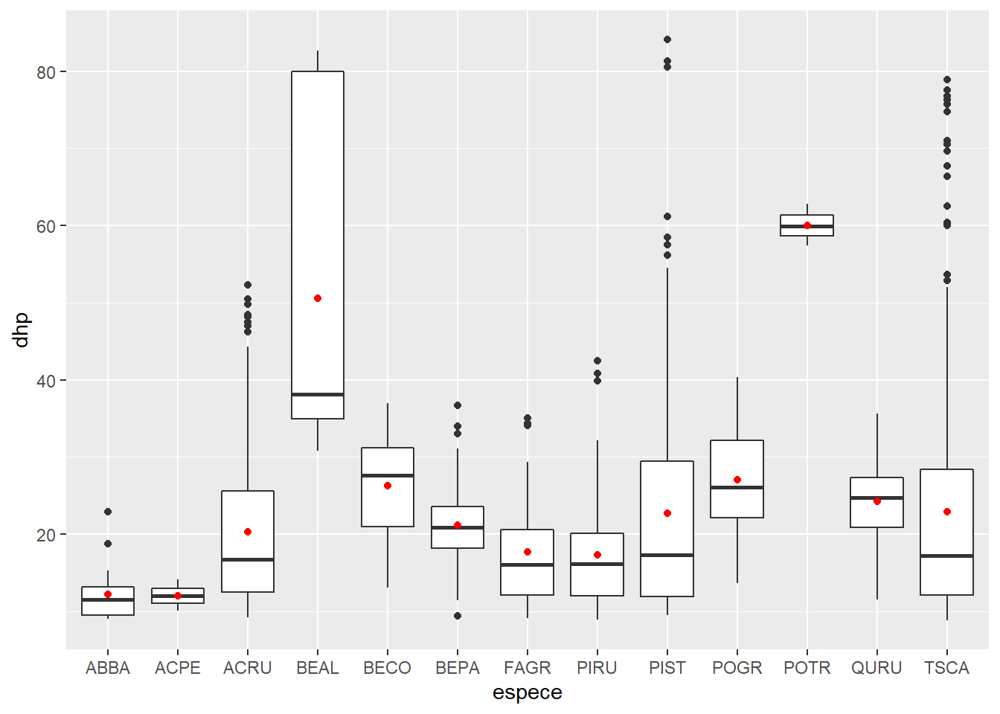
Now, we produce a histogram of the DBH for all trees with geom_histogram. The histogram represents a single variable, so we do not need to specify y in aes.
ggplot(kejim, aes(x = dhp)) +
geom_histogram(binwidth = 5, color = "white", fill = "blue")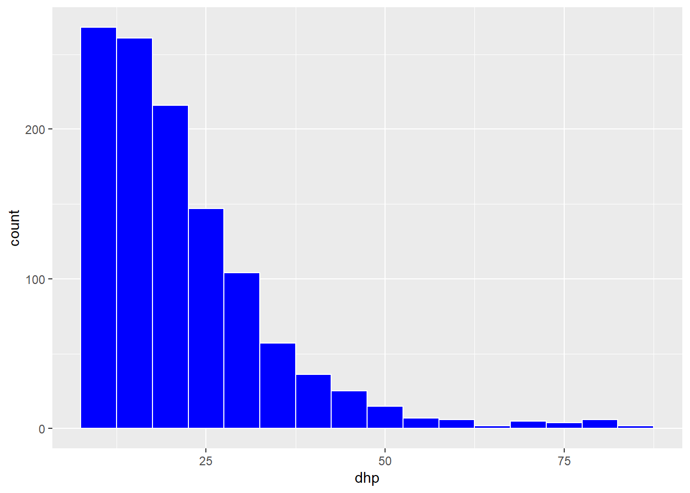
In the geom_histogram function, we specified several arguments in order to choose the size of the bins (binwith), the color of the border (color) and the fill color of the bars (fill).
Rather than using one fill color for all bars, we could represent different species by bars of different colors on the histogram. In this case, we must associate fill to the variable espece inside the aes function.
ggplot(kejim, aes(x = dhp, fill = espece)) +
geom_histogram(binwidth = 5, color = "white")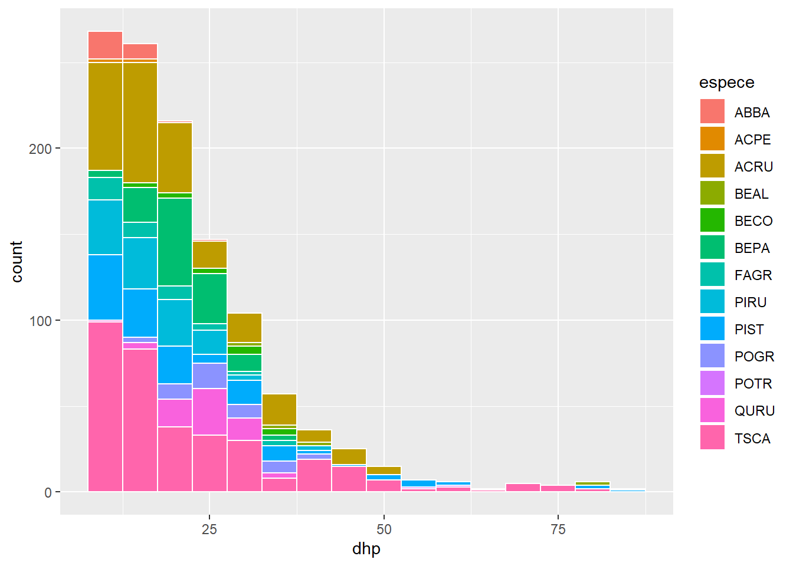
Exercise 2
With geom_bar, create a bar graph of the number of individuals per species (different species on the x-axis). Use a color code to identify individuals from different sites.
Divide a graph in facets
In the exercise, we produced a graph of the number of individuals per species. If we want to visualize separately the distribution of species on different sites, we could divide the data by site and produce several graphs. Fortunately, ggplot2 simplifies this task with the facet concept.
ggplot(kejim, aes(x = espece)) +
geom_bar() +
facet_wrap(~ site)
Note that you must put a tilde (~) before the name of the variable in facet_wrap.
In the previous graph, species codes are not visible on the x axis. So we add the coord_flip function to invert the axes and produce horizontal bars.
ggplot(kejim, aes(x = espece)) +
geom_bar() +
facet_wrap(~ site) +
coord_flip()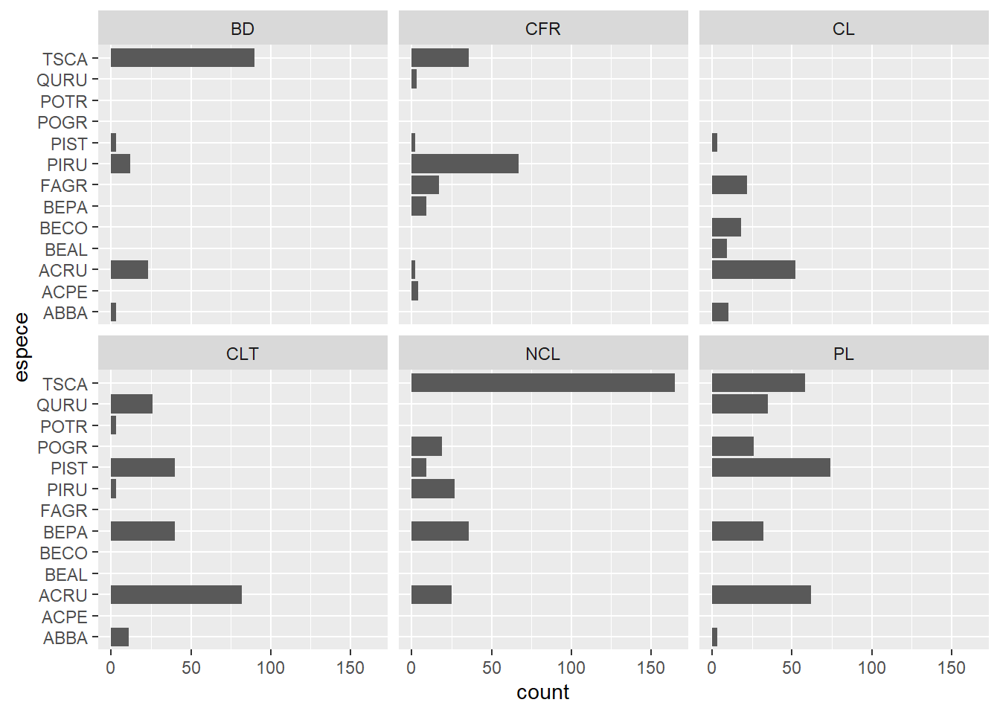
We can also create a grid of facets (facet_grid) with two variables. For example, here are histograms of the DBH by site and by year.
ggplot(kejim, aes(x = dhp)) +
geom_histogram(binwidth = 5) +
facet_grid(annee ~ site)
Exercise 3
From the msleep dataset, create a scatter plot of total sleep (sleep_total) and REM sleep (sleep_rem) with one facet for each type of diet (vore).
Customize the appearance of graphs
All visual aspects of ggplot2 graphics can be customized: title and scale of axes, size and font, colors, margins, etc. If the default values of these parameters are sufficient for a quick exploration of the data, the production of figures for publications or presentations requires further adjustments.
Let’s start with a density chart for the DBH of three species (TSCA, ACRU and BEPA). We save this graph in an object (dens) so that we can modify it without rewriting the code of the basic graph.
trois_esp <- kejim[kejim$espece %in% c("TSCA", "ACRU", "BEPA"), ]
dens <- ggplot(trois_esp, aes(x = dhp, fill = espece)) +
geom_density(alpha = 0.3)
dens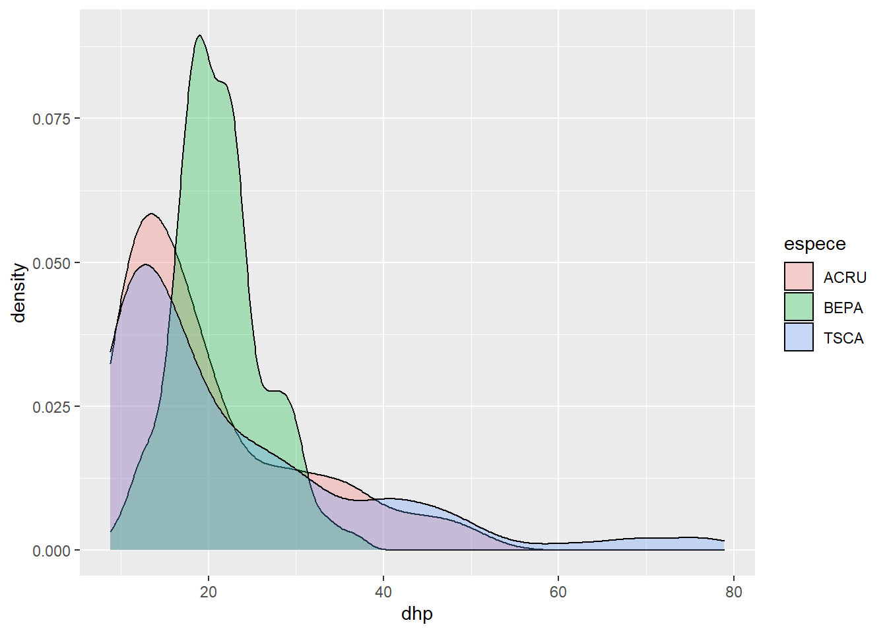
What does the alpha parameter means? Try changing its value.
The title of the chart, axes, and legend are specified with the labs function (for labels).
dens <- dens +
labs(title = "Distribution of the diameter of three species at Kejimkujik National Park",
x = "Diameter at breast height (cm)", y = "Density", fill = "Species")
dens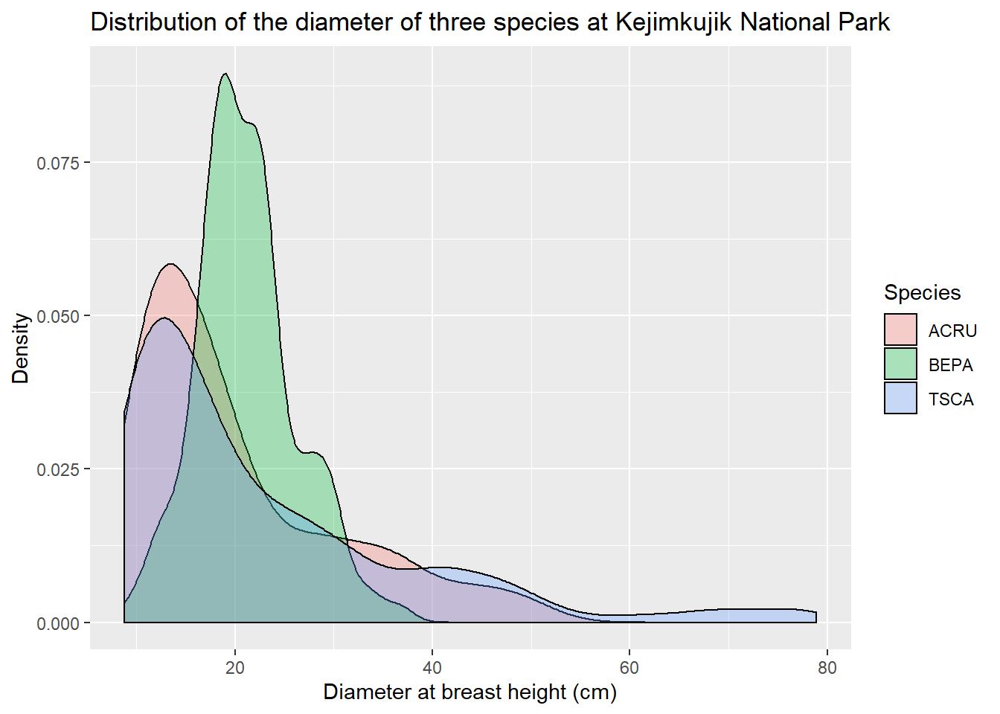
Functions starting with scale _... let us adjust different elements of the scales represented on the graph. In the following example, we change the values shown on the x axis with the breaks argument of scale_x_continuous. With the scale_fill_manual function, we specify the fill colors for the density curves (values), and then rename the legend elements (labels).
dens <- dens +
scale_x_continuous(breaks = seq(10, 80, 10)) +
scale_fill_manual(values = c("orange", "purple", "green"),
labels = c("Acer rubrum", "Betula papyrifera", "Tsuga canadensis"))
dens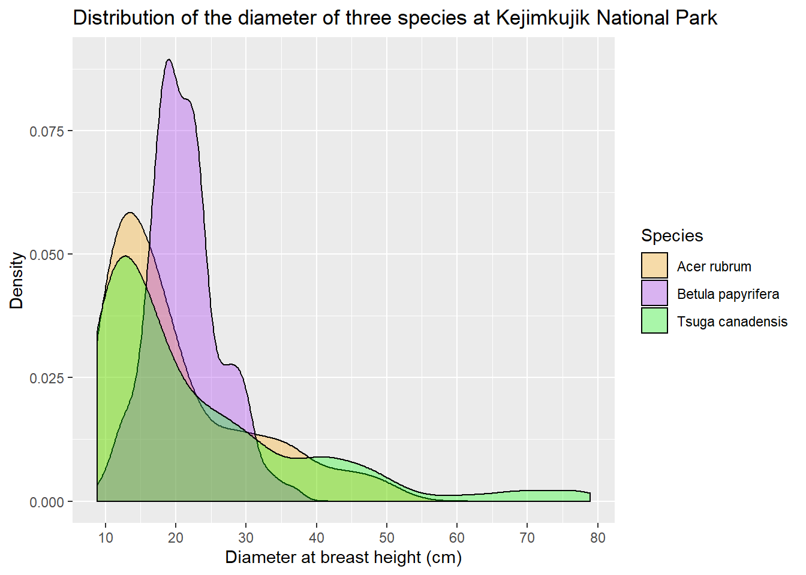
Finally, ggplot2 has themes that change the overall appearance of the chart. Here we replace the default theme (with the gray background) with theme_bw.
dens +
theme_bw()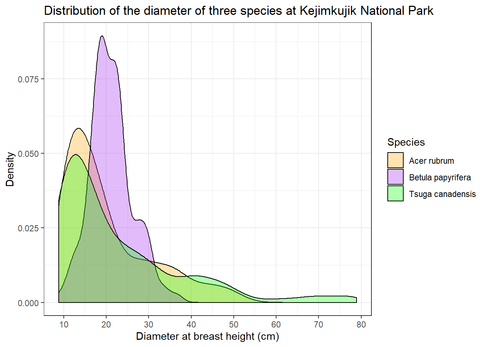
In addition to changing the entire theme, you can edit specific theme parameters with the theme function. For example, legend.position indicates where to put the legend relative to x and y (0.7 and 0.5 mean 70% of the way along x and 50% along y).
dens +
theme_bw() +
theme(legend.position = c(0.7, 0.5))
The purpose of this part was to give an overview of the possibilities of ggplot2. More complete references on this package are indicated at the bottom of the page.
Summary
The code of a graph is composed of several functions separated by
+.We start with the
ggplotfunction, which requires two arguments: the data frame, and the association between variables and elements of the graph (with theaesfunction).We then add one or more geometric layers (
geom _...) indicating the type of graph (points, lines, bars, histogram, etc.).If necessary, we can then modify the appearance of the graph with functions like
scale _...,facet _...,labsandtheme.
Data manipulation with dplyr
Data organization
The dplyr package contains functions that simplify several common operations on data frames in R. These functions are best suited for data frames in a normal form:
- each row corresponds to an observation and
- each column corresponds to a variable.
These criteria are close to the principles of data organization in a relational database (e.g. Access). In addition, the dplyr functions correspond fairly well to basic operations in the SQL database language.
Question: What are the variables in the following table, which indicates the number of individuals per site and species? Does it follow the normal form described above?
## site fir pine birch
## 1 A 35 10 26
## 2 B 24 12 45
## 3 C 51 19 8Answer: The last three columns represent the same variable (number of individuals) for different values of the species. A normalized table would then have three columns: site, species, and number.
## site species number
## 1 A fir 35
## 2 B fir 24
## 3 C fir 51
## 4 A pine 10
## 5 B pine 12
## 6 C pine 19
## 7 A birch 26
## 8 B birch 45
## 9 C birch 8By formatting your data in this way, it will also be easier to visualize (as we saw in the previous section) and to model in R.
The tidyr package contains functions to automatically convert an array of data between the two formats above. We do not have time to cover this package today, but you can find more information in the references at the bottom of the page.
For this lab, we will use the Kejimkujik National Park dataset, which is already in normal form.
Select observations with filter
At the last class, we saw how to choose rows from a data frame according to a given condition. For example, the following code retrieves all rows corresponding to the species ACRU (red maple).
acru <- kejim[kejim$espece == "ACRU", ]
head(acru)## site parcelle jour mois annee num_arbre nb_tiges espece dhp
## 4 BD A 31 8 2004 7 1 ACRU 29.0
## 12 BD A 31 8 2004 15 1 ACRU 42.9
## 13 BD A 31 8 2004 16 1 ACRU 18.0
## 23 BD B 26 8 2004 1 1 ACRU 32.5
## 25 BD B 26 8 2004 4 1 ACRU 29.8
## 34 BD B 26 8 2004 14 1 ACRU 33.0Here is the same operation with the function filter.
library(dplyr)
acru <- filter(kejim, espece == "ACRU")
head(acru)## site parcelle jour mois annee num_arbre nb_tiges espece dhp
## 1 BD A 31 8 2004 7 1 ACRU 29.0
## 2 BD A 31 8 2004 15 1 ACRU 42.9
## 3 BD A 31 8 2004 16 1 ACRU 18.0
## 4 BD B 26 8 2004 1 1 ACRU 32.5
## 5 BD B 26 8 2004 4 1 ACRU 29.8
## 6 BD B 26 8 2004 14 1 ACRU 33.0All dplyr functions have the same structure:
the name of the function indicates the operation to be performed;
the first argument is the input data frame;
the other arguments specify the operation (here, the conditions of the filter);
the function outputs a transformed data frame.
The benefits of using dplyr will become more clear after seeing many of the functions.
As in ggplot2, after specifying the data frame as the first argument, the following arguments can simply use the variable names, without quotation marks.
Multiple filters can be applied at a time by separating the conditions with commas. For example, acru30 contains red maple trees with a DBH (dhp) greater than 30 cm.
acru30 <- filter(kejim, espece == "ACRU", dhp > 30)
head(acru30)## site parcelle jour mois annee num_arbre nb_tiges espece dhp
## 1 BD A 31 8 2004 15 1 ACRU 42.9
## 2 BD B 26 8 2004 1 1 ACRU 32.5
## 3 BD B 26 8 2004 14 1 ACRU 33.0
## 4 BD B 26 8 2004 25 1 ACRU 33.8
## 5 CL A 18 8 2004 7 1 ACRU 39.8
## 6 CL A 18 8 2004 14 1 ACRU 46.2Exercise 4
Produce a table of observations for the year 2014, excluding the individuals of the species TSCA (eastern hemlock).
Sort observations with arrange
The arrange function sorts the rows of a data frame according to the value of one or more variables.
acru_tri_dhp <- arrange(acru, dhp)
head(acru_tri_dhp)## site parcelle jour mois annee num_arbre nb_tiges espece dhp
## 1 CLT A 13 8 2004 37 1 ACRU 9.20
## 2 CLT A 13 8 2004 26 1 ACRU 9.25
## 3 CLT A 13 8 2004 31 1 ACRU 9.40
## 4 CLT A 20 10 2014 37 1 ACRU 9.50
## 5 CLT A 14 10 2009 46 1 ACRU 9.70
## 6 CLT A 14 10 2009 37 1 ACRU 9.80To sort in descending order, use the desc() function. The following code sorts the data in ascending order of year, then in descending order of DBH.
acru_tri_an_dhp <- arrange(acru, annee, desc(dhp))
head(acru_tri_an_dhp)## site parcelle jour mois annee num_arbre nb_tiges espece dhp
## 1 CL B 18 8 2004 7 1 ACRU 48.5
## 2 CL B 18 8 2004 14 1 ACRU 47.5
## 3 CL A 18 8 2004 14 1 ACRU 46.2
## 4 BD A 31 8 2004 15 1 ACRU 42.9
## 5 CL B 18 8 2004 13 1 ACRU 42.1
## 6 CL A 18 8 2004 7 1 ACRU 39.8Pick variables with select
The select function selects columns from a data frame based on a comma-separated list of variable names.
acru_select <- select(acru_tri_dhp, site, annee, dhp)
head(acru_select)## site annee dhp
## 1 CLT 2004 9.20
## 2 CLT 2004 9.25
## 3 CLT 2004 9.40
## 4 CLT 2014 9.50
## 5 CLT 2009 9.70
## 6 CLT 2009 9.80Chain operations with %>%
We often want to apply a series of operations to a data frame, without keeping the intermediate results. dplyr provides a useful shortcut for this purpose with the %>% (called pipe) operator.
The keyboard shortcut for %>% in RStudio is Ctrl + Shift + M.
The %>% operator has the effect of passing the result of a function as the first argument of the following function. For example, three of the operations we did earlier (select ACRU trees, sort by DBH and extract site, year, and DBH) can be combined in the following sequence.
acru <- kejim %>%
filter(espece == "ACRU") %>%
arrange(dhp) %>%
select(site, annee, dhp)
head(acru)## site annee dhp
## 1 CLT 2004 9.20
## 2 CLT 2004 9.25
## 3 CLT 2004 9.40
## 4 CLT 2014 9.50
## 5 CLT 2009 9.70
## 6 CLT 2009 9.80The first %>% passes the initial data frame kejim to the filter function, then the chain continues up to the last output, which is assigned to acru.
Exercise 5
Using %>%, produce a table of balsam fir (ABBA) observations with DBH > 15 cm, sorted in chronological order.
Derive new variables with mutate
The mutate function creates variables derived from existing columns in the data frame. In this example, we calculate the DBH in millimeters.
kejim_dhp_mm <- mutate(kejim, dhp_mm = dhp * 10)
head(kejim_dhp_mm)## site parcelle jour mois annee num_arbre nb_tiges espece dhp dhp_mm
## 1 BD A 31 8 2004 1 1 TSCA 16.3 163
## 2 BD A 31 8 2004 2 1 TSCA 24.0 240
## 3 BD A 31 8 2004 6 1 TSCA 29.8 298
## 4 BD A 31 8 2004 7 1 ACRU 29.0 290
## 5 BD A 31 8 2004 8 1 TSCA 15.5 155
## 6 BD A 31 8 2004 9 1 TSCA 32.0 320Compte summary statistics per group: group_by and summarize
These two functions are often used together: group_by divides a data frame into groups according to the value of one or more variables and summarize calculates one or more summary variables for each group. The following example calculates the mean and standard deviation of the DBH by species.
group_by(kejim, espece) %>%
summarize(moyDHP = mean(dhp), etDHP = sd(dhp))## # A tibble: 13 x 3
## espece moyDHP etDHP
## <chr> <dbl> <dbl>
## 1 ABBA 12.2 3.26
## 2 ACPE 12.0 1.71
## 3 ACRU 20.3 10.3
## 4 BEAL 50.6 23.3
## 5 BECO 26.2 7.39
## 6 BEPA 21.2 4.98
## 7 FAGR 17.7 7.51
## 8 PIRU 17.3 6.76
## 9 PIST 22.7 15.3
## 10 POGR 27.1 6.59
## 11 POTR 60.0 2.70
## 12 QURU 24.3 4.80
## 13 TSCA 22.9 15.0Notes:
Among the columns in the input data frame, only those defining the groups are retained by
summarize.The
summarizefunction is similar tomutate: both create new columns. However,mutateoutputs a new value for each row of the input data frame, whilesummarizeoutputs a single value per group.
In addition to mean,summarize accepts any function that calculates a value from a group of values, e.g. sum, min, max, sd, and many others.
To count the number of observations in each group, we only need a single function, count. The following example shows how to count the number of trees by site and year.
compte_site_annee <- count(kejim, site, annee)
head(compte_site_annee)## site annee n
## 1 BD 2004 45
## 2 BD 2009 42
## 3 BD 2014 44
## 4 CFR 2004 48
## 5 CFR 2009 47
## 6 CFR 2014 45Join two data frames
The file codes_especes.csv contains a data frame matching species codes from kejim to the species common names in French and English.
codes_esp <- read.csv("codes_especes.csv", encoding = "UTF-8")
head(codes_esp)## espece nom_espece species_name
## 1 ABBA Sapin baumier Balsam Fir
## 2 ACPE Érable de Pennsylvanie Striped Maple
## 3 ACRU Érable rouge Red Maple
## 4 ACSA Érable à sucre Sugar Maple
## 5 ACSP Érable à épis Mountain Maple
## 6 AMLA Amélanchier Indian PearNote: The encoding = "UTF-8" argument is required to properly read diacritic marks in French.
To add these species names to the kejim data frame, we must join the two data frames with inner_join.
kejim_esp <- inner_join(kejim, codes_esp)## Joining, by = "espece"head(kejim_esp)## site parcelle jour mois annee num_arbre nb_tiges espece dhp nom_espece
## 1 BD A 31 8 2004 1 1 TSCA 16.3 Pruche du Canada
## 2 BD A 31 8 2004 2 1 TSCA 24.0 Pruche du Canada
## 3 BD A 31 8 2004 6 1 TSCA 29.8 Pruche du Canada
## 4 BD A 31 8 2004 7 1 ACRU 29.0 Érable rouge
## 5 BD A 31 8 2004 8 1 TSCA 15.5 Pruche du Canada
## 6 BD A 31 8 2004 9 1 TSCA 32.0 Pruche du Canada
## species_name
## 1 Eastern Hemlock
## 2 Eastern Hemlock
## 3 Eastern Hemlock
## 4 Red Maple
## 5 Eastern Hemlock
## 6 Eastern HemlockThe concept of a join originates in relational databases. As we can see here, the inner_join function has attached to each row of the first data frame (kejim) the data from a row in the second data frame (codes_esp) that has a matching value in espece. By default, dplyr assumes that the match must be made on columns of the same name, but it is possible to specify otherwise.
Note that the kejim_esp data frame has 1070 rows, 91 fewer than kejim. This is because species codes in kejim are missing from codes_esp. To keep the rows from the first data frame with no match in the second (and add missing values to the species name columns), you must use a different join type, left_join. We do not have time to discuss the different join types, but you can read the dplyr cheatsheet in the footnotes for more information.
Summary of dplyr functions
| Fonction | Description |
|---|---|
filter |
select rows matching certain conditions |
arrange |
sort rows based on the values of specific variables |
select |
select columns by name |
mutate |
create new variables derived from existing columns |
group_by |
divide observations into groups based on grouping variables |
summarize |
calculate summaries of multiple observations (often by group) |
inner_join |
join two data frames based on common variables |
References
R for Data Science (http://r4ds.had.co.nz), specifically Chapters 3 (Data Visualisation) and 5 (Data transformation).
Cheat sheet for dplyr: https://github.com/rstudio/cheatsheets/raw/master/data-transformation.pdf.
Cheat sheet for ggplot2: https://github.com/rstudio/cheatsheets/raw/master/data-visualization-2.1.pdf.
Reference website for all ggplot2 functions: https://ggplot2.tidyverse.org/reference/index.html.
Solutions to the exercises
Exercise 1
From the kejim data frame, produce a scatter plot of the DBH (dhp, on the y axis) according to the species (espece, on the x axis).
ggplot(data = kejim, mapping = aes(x = espece, y = dhp)) +
geom_point()
Exercise 2
With geom_bar, create a bar graph of the number of individuals per species (different species on the x-axis). Use a color code to identify individuals from different sites.
ggplot(kejim, aes(x = espece, fill = site)) +
geom_bar()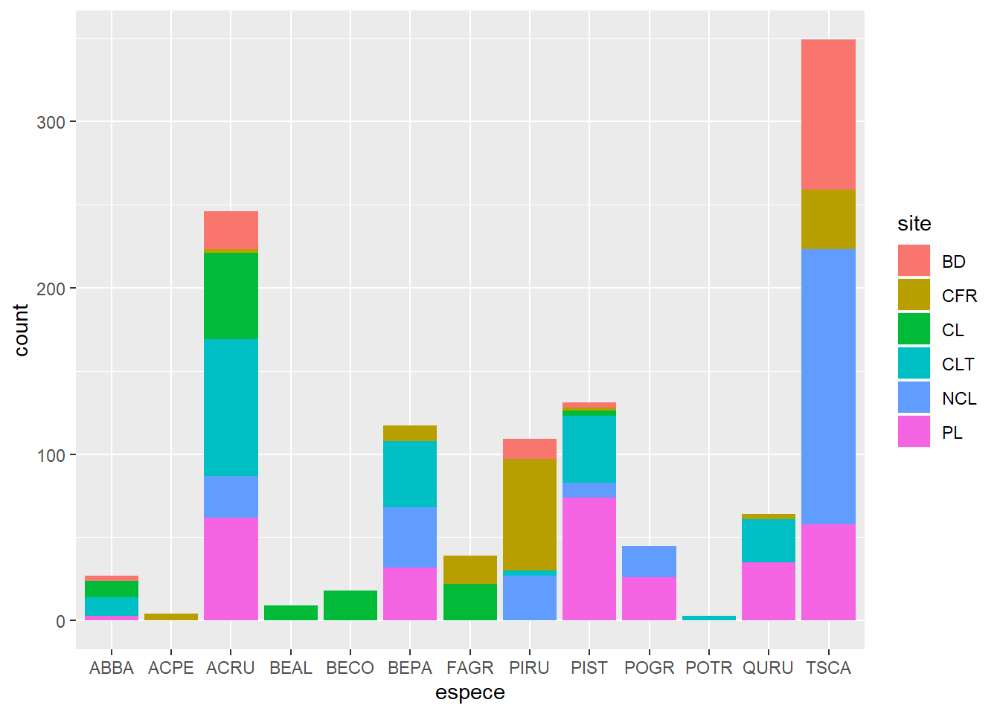
Exercise 3
From the msleep dataset, create a scatter plot of total sleep (sleep_total) and REM sleep (sleep_rem) with one facet for each type of diet (vore)
ggplot(msleep, aes(x = sleep_total, y = sleep_rem)) +
geom_point() +
facet_wrap(~ vore)## Warning: Removed 22 rows containing missing values (geom_point).
Exercise 4
Produce a table of observations for the year 2014, excluding the individuals of the species TSCA (eastern hemlock).
kejim2014 <- filter(kejim, annee == 2014, espece != "TSCA")
head(kejim2014)## site parcelle jour mois annee num_arbre nb_tiges espece dhp
## 1 BD A 11 8 2014 4 1 ACRU 38.2
## 2 BD A 11 8 2014 7 1 ACRU 32.9
## 3 BD A 11 8 2014 15 1 ACRU 44.3
## 4 BD A 11 8 2014 16 1 ACRU 18.2
## 5 BD B 11 8 2014 1 1 ACRU 33.9
## 6 BD B 11 8 2014 3 1 PIRU 9.8Exercise 5
Using %>%, produce a table of balsam fir (ABBA) observations with DBH > 15 cm, sorted in chronological order.
kejim %>%
filter(espece == "ABBA", dhp > 15) %>%
arrange(annee, mois, jour)## site parcelle jour mois annee num_arbre nb_tiges espece dhp
## 1 CLT A 13 8 2004 35 1 ABBA 18.8
## 2 CL A 18 8 2004 8 1 ABBA 15.1
## 3 CLT A 14 10 2009 35 1 ABBA 22.9
## 4 CL A 21 10 2009 8 1 ABBA 15.3
## 5 CLT B 20 10 2014 10 1 ABBA 15.2Exercise 6
Sort the species in kejim in descending order of maximum diameter.
group_by(kejim, espece) %>%
summarize(maxDHP = max(dhp)) %>%
arrange(desc(maxDHP))## # A tibble: 13 x 2
## espece maxDHP
## <chr> <dbl>
## 1 PIST 84.1
## 2 BEAL 82.7
## 3 TSCA 78.9
## 4 POTR 62.8
## 5 ACRU 52.3
## 6 PIRU 42.5
## 7 POGR 40.4
## 8 BECO 37
## 9 BEPA 36.7
## 10 QURU 35.6
## 11 FAGR 35.1
## 12 ABBA 22.9
## 13 ACPE 14.1